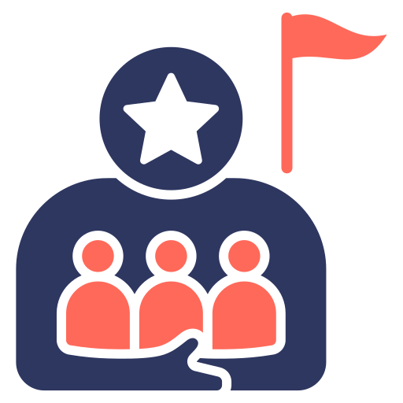
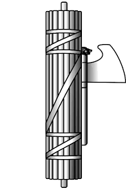
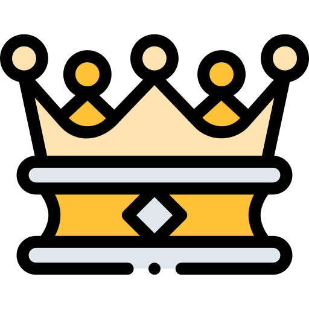
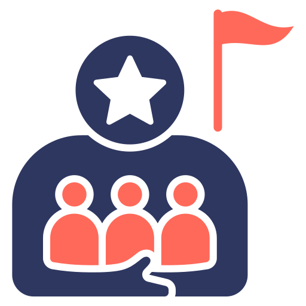
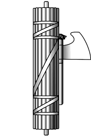
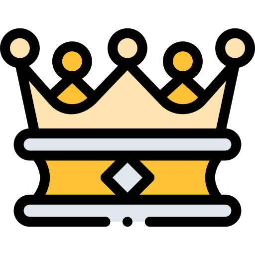

Compare tradeoffs, not tribes
Look at your top match and close contenders and ask: where do you prioritize freedom, equality, tradition, community, and sustainability?
Which political ideology fits you best?
Discover the ideology that best matches your values and tradeoffs. This 32-question experience blends political philosophy with modern civics—covering freedom, equality, tradition, community, and sustainability.
Each question weighs value tradeoffs across freedom, equality, tradition, community, and sustainability.
Liberty, rights, and limits on power.
Fairness, opportunity, and social safety nets.
Rule of law, governance, and stability.
Long-term impacts and stewardship.
Social cohesion, belonging, and duty.
Political ideologies are frameworks for making tradeoffs—freedom vs. equality, markets vs. safety nets, tradition vs. change, national unity vs. pluralism, and short-term wins vs. long-term stewardship. This quiz translates your instincts into an ideology match you can explore.
 Freedom
Freedom
 Equality
Equality
 Community
Community
Your match blends these signals into a practical snapshot. It’s for reflection, not a voter guide.
Featured ideologies Capitalism
Nationalism
Authoritarianism
Communism
Fascism
Monarchism
Capitalism
Nationalism
Authoritarianism
Communism
Fascism
Monarchism
 Theocracy
Theocracy
Prioritizes individual liberty, limited government, and voluntary exchange.
Blends markets with strong public services, worker protections, and opportunity for all.
Emphasizes continuity, tradition, and legitimacy through a crowned or hereditary head of state (often constitutional).
Treats climate and ecology as core priorities, shaping economic and social policy around long-term resilience.
Focuses on class and power, aiming for radical economic equality through collective ownership and planning.
A fast, modern quiz with clear outcomes, close contenders, and an ideology guide so you can understand the “why,” not just the label.
You’ll get a primary ideology plus “close contenders” so you can compare nearby worldviews rather than forcing a single box.

Each ideology includes plain-language strengths, tradeoffs, and the kinds of policies it tends to prioritize.

The quiz is designed to reduce “option frequency” bias so no ideology wins just because it appears more often.

Share your result with friends and compare how different values map to different ideological traditions.
The best use of this quiz is reflection and learning: understand your instincts, then compare how other ideologies solve the same tradeoffs.
Look at your top match and close contenders and ask: where do you prioritize freedom, equality, tradition, community, and sustainability?
When a topic gets heated, anchor the conversation in a tradeoff (e.g., “liberty vs. security”) rather than labels.
Use the guide to understand what each ideology generally values, where it differs from nearby positions, and what it tends to optimize for.
Try answering consistently from a “market-first” or “state-first” view and see how a small set of tradeoffs shifts the outcome.
The quiz scores the ideology you pick for each question, then selects a result in a way that’s designed to minimize structural bias from uneven option frequency.
Each answer option represents a common value tradeoff (freedom, equality, institutions, sustainability, community).
Your chosen options add points to the ideology you selected. Results also show close contenders for context.
The quiz balances how often ideologies appear as options so no ideology is advantaged just by showing up more frequently.
Your result includes strengths, watch-outs, and an ideology guide for deeper reading.
This is a learning tool, not a scientific assessment or political advice. Use it to explore ideas and clarify your own priorities.
Use your result to learn faster, have better conversations, and understand disagreements as tradeoffs instead of personal attacks.
Use the guide to compare ideologies side-by-side, then revisit questions and see how different assumptions change outcomes.
Use results as an icebreaker: discuss which tradeoffs you value most and why.
Use the result as a mirror: which tradeoffs feel non-negotiable and which are context-dependent?
Use ideology language to reduce heat: name the tradeoff, define terms, and avoid straw-manning.
Answer 32 questions to discover which political ideology best fits your values.
Your match
Browse quick snapshots of each ideology. Search or filter to compare themes before diving into your result.
Rights-first worldview that supports personal freedom, equal protection, and opportunity-enhancing reforms.
Stability-oriented worldview that values institutions, gradual change, and the social norms that hold communities together.
Freedom-maximizing worldview that favors limited government, strong civil liberties, and voluntary exchange.
Equality-focused worldview that supports robust public services, worker protections, and regulated markets.
Power-and-equality worldview that emphasizes democratic control of major resources and reducing class inequality.
Long-term stewardship worldview that puts climate, ecology, and resilience at the center of policy.
Market-oriented worldview that emphasizes private enterprise, competition, innovation, and voluntary exchange.
Cohesion-first worldview that prioritizes national identity, sovereignty, and resilience as a shared political project.
Anti-hierarchy worldview focused on voluntary cooperation, mutual aid, and bottom-up organization.
Order-first worldview that favors centralized coordination and decisive leadership over slow compromise.
Radical equality worldview that seeks collective ownership of major productive assets and an end to class domination.
Extremist authoritarian worldview centered on ultranationalism and enforced unity, typically suppressing dissent and civil liberties.
Tradition-and-continuity worldview that favors crowned or hereditary leadership as a stabilizing symbol and hierarchy.
Religious authority worldview that seeks to ground state law in doctrine, prioritizing moral order over secular neutrality.
Your guide to how the Political Ideology Quiz works and how to interpret your result.
Compare results with friends and talk through the tradeoffs you each prioritize.